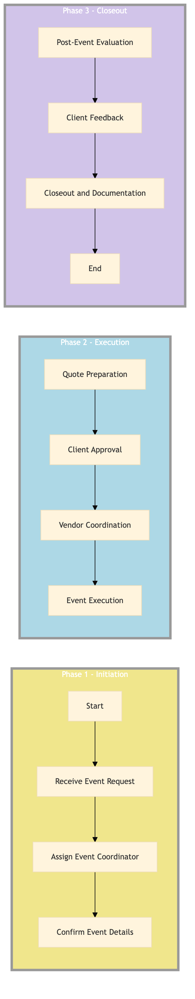

| Role | Steps |
|---|---|
| Front Desk Agent | 1.1 |
| Revenue Manager | 1.2 |
| Event Coordinator | 2.1 2.2 2.3 3.1 3.2 3.3 3.4 3.5 |
| Banquet Manager | 3.2 3.3 |
| Step | Name | Role | System | Input | Output | KPI | Dec? | Exc? | Pain Point / Risk |
|---|---|---|---|---|---|---|---|---|---|
| 1.1 | Receive Event Request | Front Desk Agent | Oracle OPERA Cloud | Event request form | Event record in Oracle OPERA Cloud | Response time within 5 minutes | N | Y | Handling last-minute requests |
| 1.2 | Assign Event Coordinator | Revenue Manager | Oracle OPERA Cloud | Event record | Assigned event coordinator in Oracle OPERA Cloud | Assignment within 10 minutes | N | Y | Resource allocation during peak seasons |
| 2.1 | Confirm Event Details | Event Coordinator | Oracle OPERA Cloud, IDeaS G3 RMS | Event record | Confirmed event details in Oracle OPERA Cloud | Confirmation within 24 hours | N | Y | Handling conflicting dates |
| 2.2 | Quote Preparation | Event Coordinator | Oracle OPERA Cloud, SynXis CRS | Confirmed event details | Event quote | Quote preparation within 48 hours | N | Y | Accurate cost estimation |
| 2.3 | Client Approval | Event Coordinator | Oracle OPERA Cloud, Marriott Bonvoy CRM | Event quote | Approved event details in Oracle OPERA Cloud | Approval within 72 hours | Y | N | Client negotiation |
| 3.1 | Vendor Coordination | Event Coordinator | Birchstreet Procurement, Oracle OPERA Cloud | Approved event details | Vendor contracts and schedules | Coordination within 5 days | N | Y | Supplier reliability |
| 3.2 | Event Execution | Event Coordinator, Banquet Manager | Oracle OPERA Cloud, Oracle MICROS Simphony | Vendor contracts and schedules | Successful event execution | Execution within budget | N | Y | Logistical coordination |
| 3.3 | Post-Event Evaluation | Event Coordinator, Banquet Manager | Oracle OPERA Cloud, Book4Time | Event execution details | Event evaluation report | Evaluation within 7 days | N | Y | Detailed feedback collection |
| 3.4 | Client Feedback | Event Coordinator, Banquet Manager | Oracle OPERA Cloud, Marriott Bonvoy CRM | Event evaluation report | Client feedback in Oracle OPERA Cloud | Feedback collection within 10 days | N | Y | Client satisfaction measurement |
| 3.5 | Closeout and Documentation | Event Coordinator, Banquet Manager | Oracle OPERA Cloud, SAP S/4HANA | Client feedback | Closed event record in Oracle OPERA Cloud | Closeout within 15 days | N | Y | Final billing and documentation |
The process for managing external catering and offsite events at a Marriott full-service hotel involves coordination between various departments to ensure smooth execution of banquets and events.